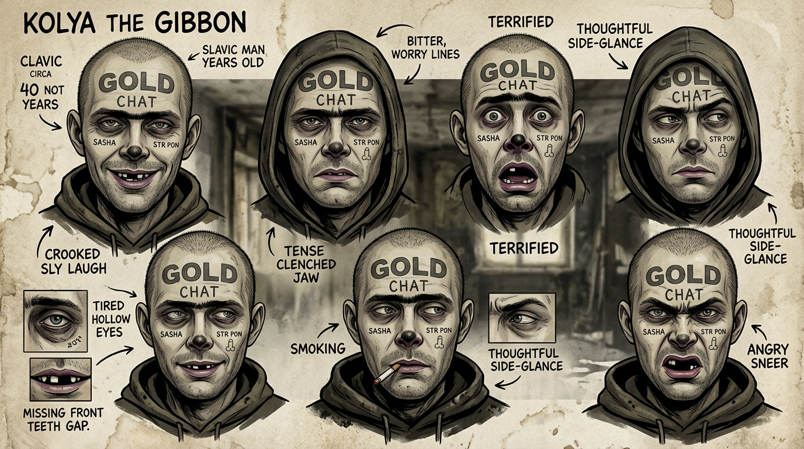
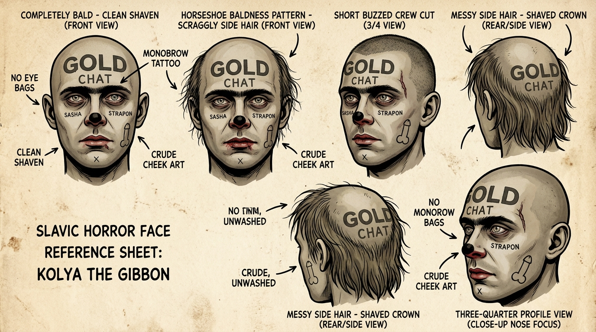
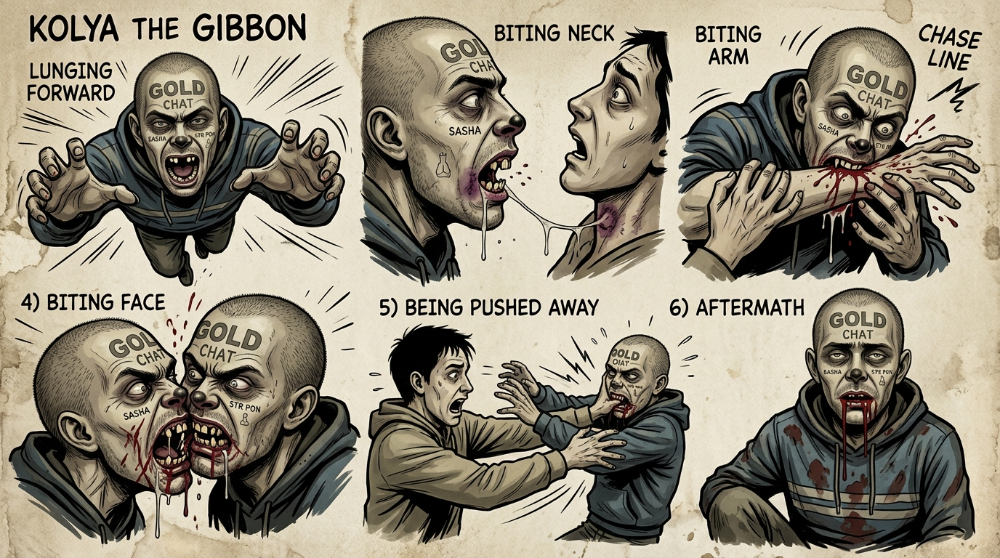
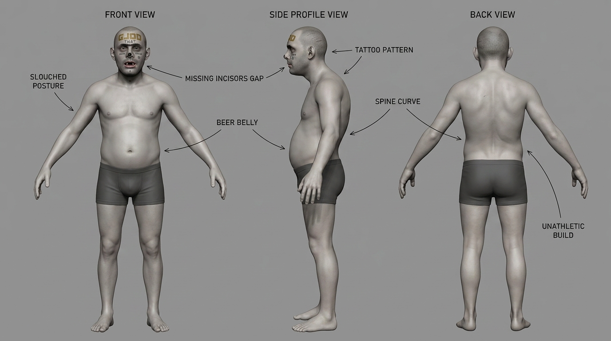
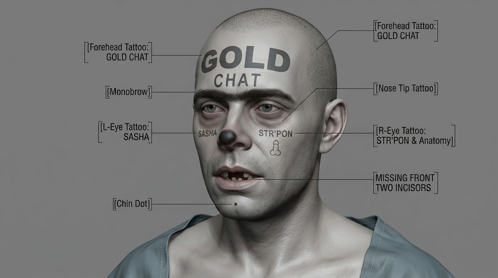
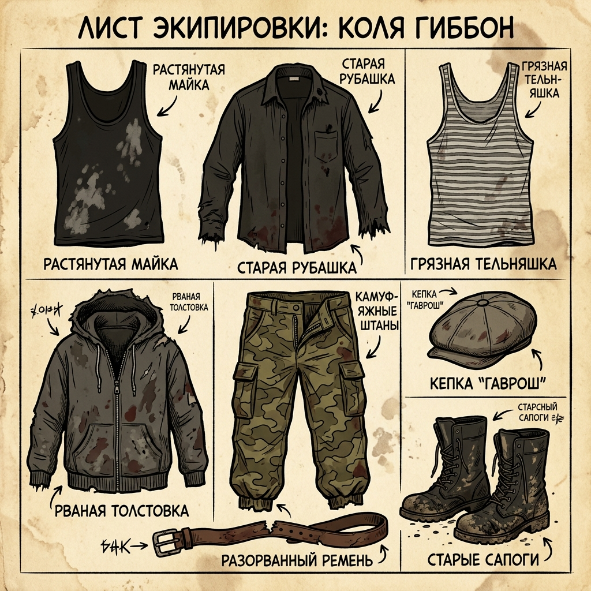
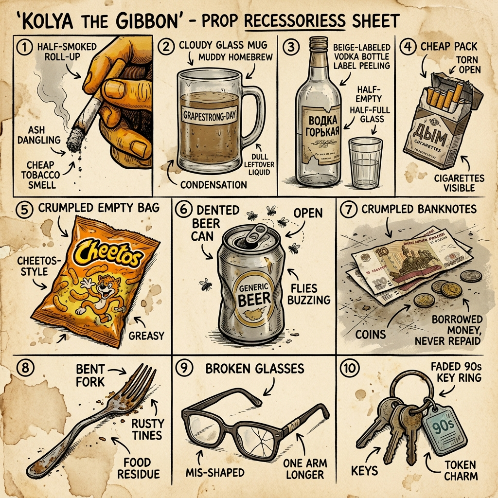
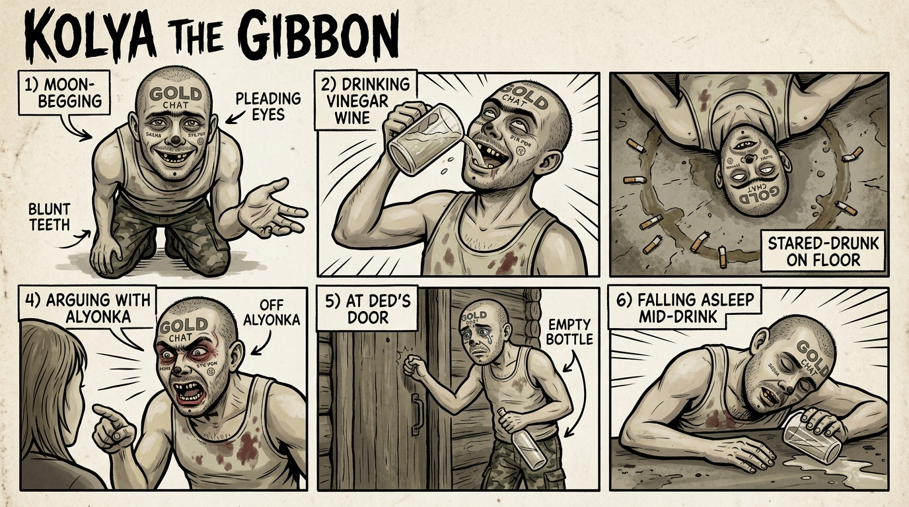

Производственный бренд-бук персонажа Николая Белова для хоррор-комикса с чёрным юмором. Этот лист фиксирует канон внешности, манеры, запаха, привычек, тату-карту лица, визуальные ограничения и готовые референсы для иллюстрации, 3D, раскадровки и AI-генерации.
Николай Белов, он же Калич, Колян, Гиббон, — деградировавший славянский мужик около сорока лет, будто выросший не из семьи и двора, а из затхлого подъезда, пустых бутылок и чужих долговых расписок. Он живёт на пособие, бесконечно клянчит деньги у знакомых, соседей, случайных собутыльников и у любого, кто задержал на нём взгляд дольше трёх секунд. Работы у него нет и, главное, никогда не было как внутреннего намерения: Коля не просто безработный, а принципиально паразитический организм, приспособленный к выживанию за чужой счёт. Он пьёт «виноградный день» — спирт с газировкой и любой мутный суррогат, который можно достать по дешёвке, курит без остановки, жуёт чипсы, засыпает там, где упал, и не испытывает ни стыда, ни благодарности, ни рефлексии. Вокруг него всегда держится запах скисшего пива, пота, дешёвых сигарет и старого подъездного текстиля.
Женат на Алёнке; вместе они — профессиональная микросекта попрошаек «до получки». Их дом — убитая однушка с жёлтыми стенами, где бардак уже стал частью архитектуры: окурки, крошки, пустые банки, пакетики, мутные кружки и вечно липкий стол. Голос у Коли писклявый, слова он тянет, будто пытается выпросить интонацией то, чего не сумел добиться лицом: «а-а-а ну-у-у...». Он постоянно оправдывается, юлить умеет лучше, чем ходить, и любую катастрофу объясняет одинаково: это не он, оно само. Особая черта — кусаться. Из-за отсутствия двух передних больших зубов и обломанных остальных его рот работает как тупой капкан: он может впиться пеньками в руку, шею или лицо, будто бродячий пёс, которого никто никогда не дрессировал и не жалел. Архетипически Коля — социальный паразит, бродяга, пьяный кусака и бытовой упырь, существующий на стыке жалости, отвращения и чёрного юмора.
GOLD CHAT — крупная грубая надпись блоковыми буквами, расположена высоко по центру лба и читается сразу.
Тёмная почти сросшаяся монобровь, выглядящая как татуированная полоса или жёстко затемнённый волосистый мост.
Чёрный закрашенный кончик носа — как отдельная клякса-метка, без красноты вокруг.
SASHA — мелкая текстовая татуировка под левым глазом.
Грубый анатомический рисунок с сексуализированной формой, должен оставаться узнаваемым и нарочито кривым.
Мелкая точка / метка под подбородком как нижний фиксирующий знак лица.

face-expressions-v3.png
body-poses-v1.png
bite-attacks-v1.png
3d-body-turnaround.png
3d-head-detail.png
wardrobe-grid.png
props-grid.png
social-poses-v1.pngВсе изображения выше — канонические опорные листы текущей версии персонажа и должны использоваться как первичный визуальный якорь.
40 ЛЕТ, не старше.
ВСЕГДА чисто выбрито.
Нет передних двух зубов сверху и снизу; остальные — обрубки-пеньки.
Голова бритая или слегка с залысинами.
ВСЕГДА грязная, мятая, заношенная.
Пустые, серо-голубые. НЕТ красных мешков под глазами.
Обычный. Нет красноты.
ВСЕГДА видны и узнаваемы: GOLD CHAT, SASHA, анатомический рисунок, монобровь, чёрный кончик носа.
Вокруг бардак: окурки, бутылки, чипсы, липкие поверхности.
Он НИКОГДА не работает и НИКОГДА не возвращает долги.
Kolya the Gibbon, Slavic male age 40, clean shaven face, bald or slightly receding hair, pale grey-waxy skin, grey-blue tired hollow eyes, no red under-eye bags, ordinary nose with blackened tip tattoo, missing top and bottom front two incisors, remaining teeth are blunt yellow stump pegs, slightly hunched posture, soft unathletic build, mild belly, dirty worn clothes, face tattoos clearly visible: GOLD CHAT on forehead, SASHA under left eye, crude anatomy drawing on right cheek, almost-monobrow, small mark under chin.
Horror comic style, EC Comics meets Junji Ito, thick black outlines, dirty textured paper mood, sepia-brown and sickly grey palette, oppressive бытовой horror, black humor, grimy interiors, cluttered apartment details, nicotine stains, cheap alcohol atmosphere, cinematic but ugly-real.
No red under-eye bags, clean shaven, age 40, grey-blue eyes, no red nose, not elderly, not handsome, not athletic, not stylish, not healthy, no clean environment, no tidy clothing, no missing face tattoos.